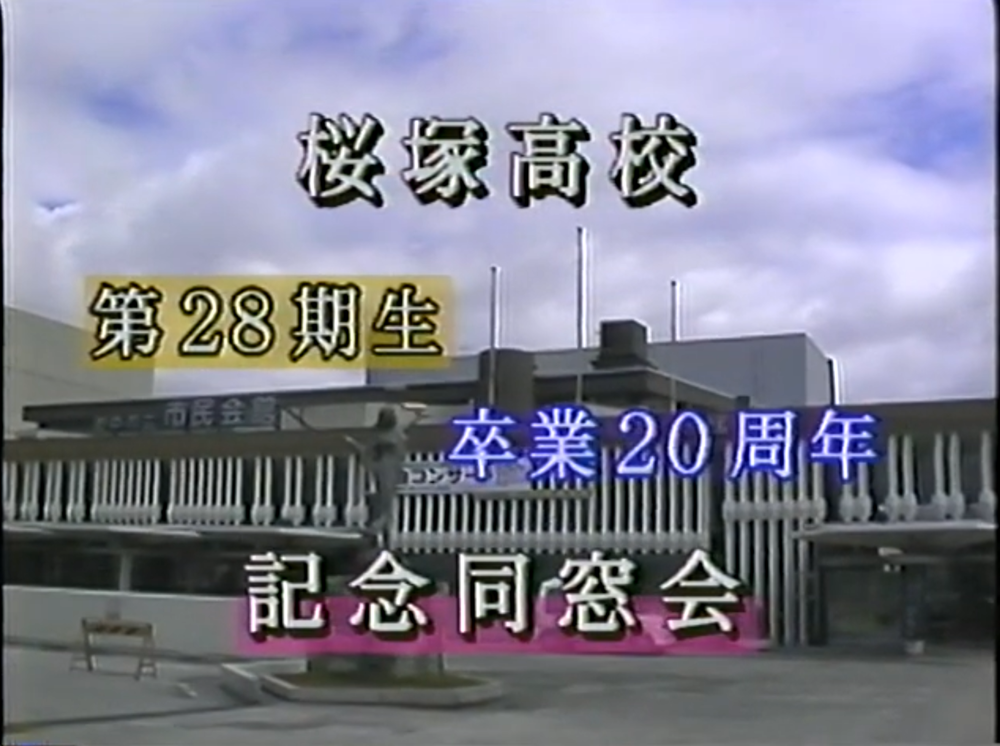

桜塚高校第28期同期会ページ
← クリックで音楽が流れます
🎬 卒業50周年記念同期会 動画UP!!
「卒業50周年記念同期会」は幹事の皆様のご尽力により盛大に執り行われました。
ご参加いただいた皆様、本当にお疲れさまでした。
「俺たちの朝」のエンディングをイメージしてビデオを編集してみました。ご自身や懐かしい友人の姿が映っているはずです。
360°での無修正版もUPしていますので、画面をぐるぐる回しながらお楽しみください。
💬 お願い：動画のコメント欄でコメントをお寄せください。
動画のコメント欄にぜひこのビデオの感想や、映ってる方への呼びかけ等で盛り上がってください。
みんな見てくれてるのか、心配になっちゃうので。。ぜひぜひ..ﾄﾎﾎ
✨ それでは、あの日の楽しい時間をもう一度お楽しみください！ ✨
お問い合わせ：antoinetterose1789@gmail.com
-
016:33再生
卒業50周年記念同期会ビデオ ダイジェスト版
2Dビデオ
📸 撮影写真の共有について
各自で撮影した写真等はこちらでアップロード・閲覧してください。
Googleドライブ 写真フォルダを開く
【操作手順】
1. 上のボタンをクリックしてGoogleドライブを開きます。
2. ログイン画面が出た場合は、ご自身のGoogleアカウントでログインしてください。
3. 写真を追加したい場合は、右上（または＋ボタン）から「ファイルのアップロード」を選択してください。
4. 写真の閲覧はそのままサムネイルをクリックして可能です。
1. 上のボタンをクリックしてGoogleドライブを開きます。
2. ログイン画面が出た場合は、ご自身のGoogleアカウントでログインしてください。
3. 写真を追加したい場合は、右上（または＋ボタン）から「ファイルのアップロード」を選択してください。
4. 写真の閲覧はそのままサムネイルをクリックして可能です。
3枚.jpg)
221枚.jpg)
.jpg)
211枚.jpg)
.jpg)

-

01会場ビデオ（卒業20周年）再生
Produced by 和田展明君
🔍 同期生クラス・写真検索
📱 360°動画の楽しみ方
1
「再生」ボタンを押す
YouTubeアプリが起動します。
YouTubeアプリが起動します。
2
スマホを動かしてみる
スマホの動きに合わせて映像のアングルが変わります。
スマホの動きに合わせて映像のアングルが変わります。
3
画質を上げる
⚙️マークから「画質」→「高い画質」を選んでください。
⚙️マークから「画質」→「高い画質」を選んでください。